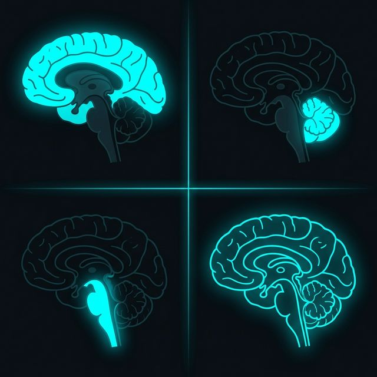
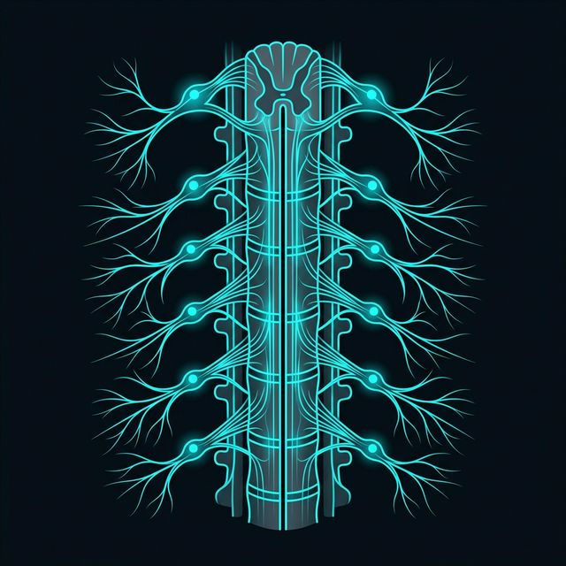

Beyin (Cerebrum)
2.1 Beyin (Entegre Kontrol)
1200-1500 gYetişkin Ağırlığı
~1 TrilyonHücre Sayısı
%20 TüketimO2 ve Kalori
Serebrum (Büyük Beyin)
İki hemisfer (Sol: Dil | Sağ: Görsel-Uzamsal). Gri madde (dış/hücre gövdesi) ve Beyaz madde (iç/akson) tabakalaşması.
Embriyolojik Köken (Nöral Tüp)

40-50 cm
2.2 Omurilik (İletim ve Arayüz)
Temel İşlevler
Motor komut iletimi (periferiye) ve duyusal bilgi aktarımı (beyne).
Dorsal Kökler
Duyusal afferent liflerin giriş noktası.
Ventral Kökler
Motor nöronların (Ön boynuz) çıkış noktası.